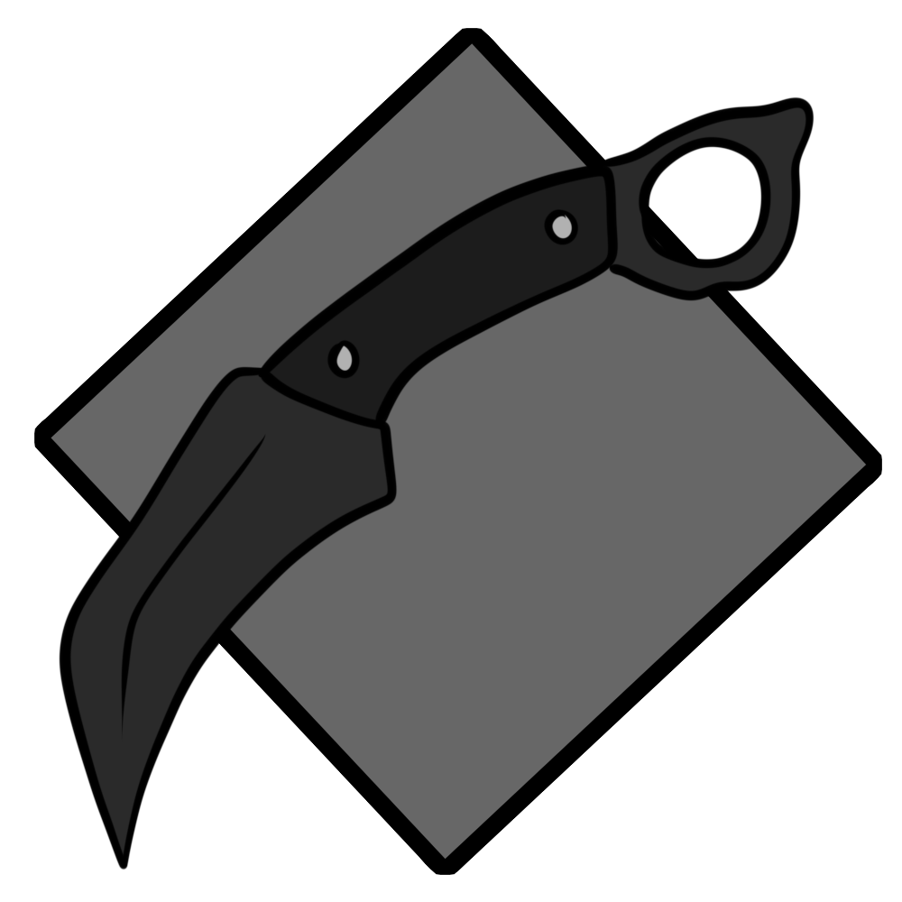
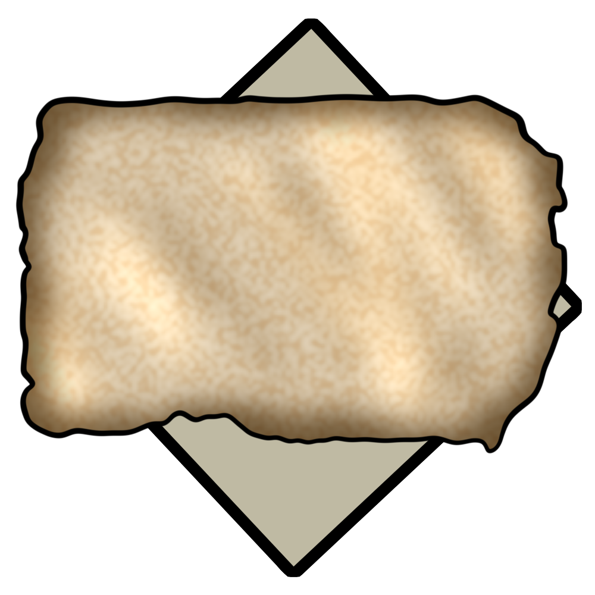

The Northern War was a deadly war, insitigated by cities formed to oppose Neo Eclipse, and they faced a crushing defeat by Neo Eclipse, which had been experimenting with military technology for much
longer.

Combat knife found in the wreckage.
Chemical warfare was common, so masks were required.

Declarations were made, then burned in front of the people who wanted a better life.